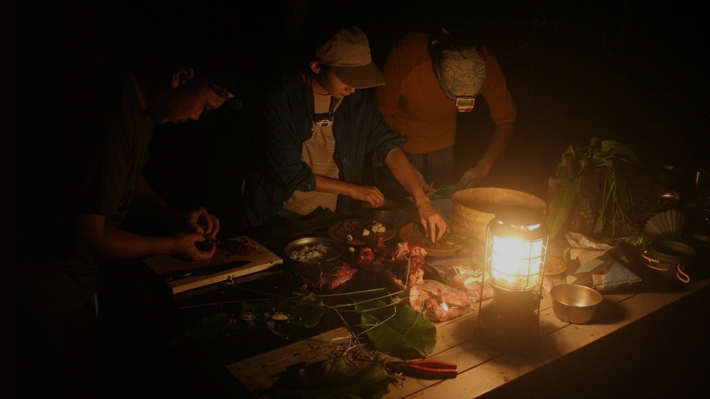
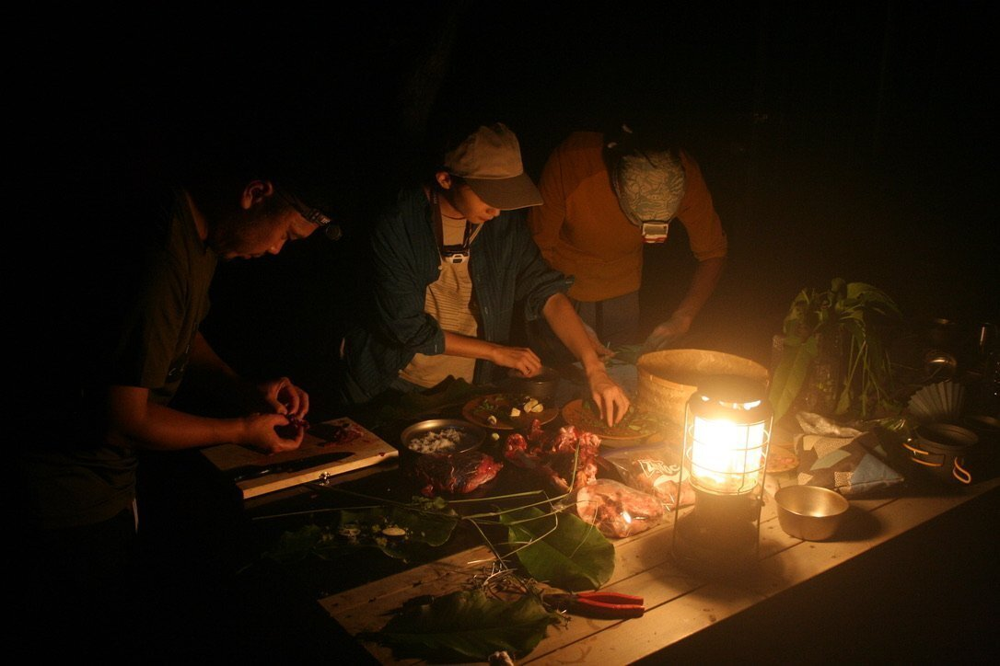
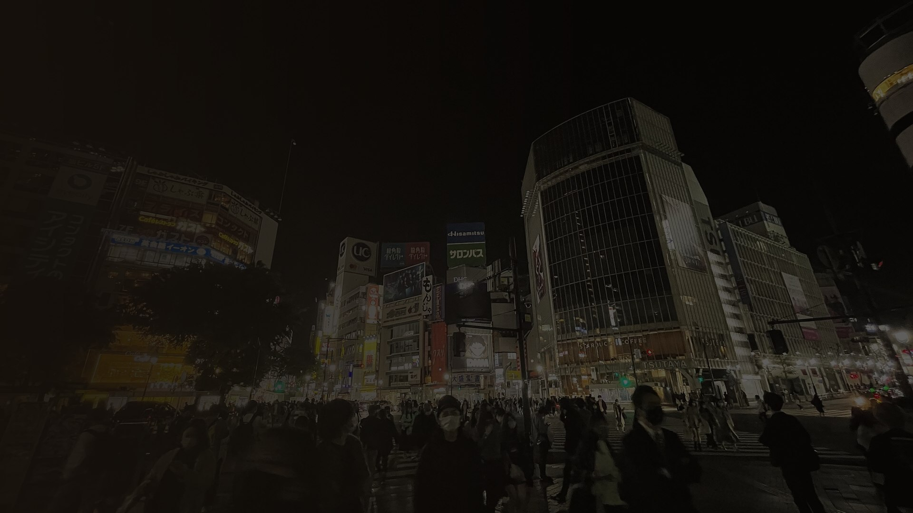
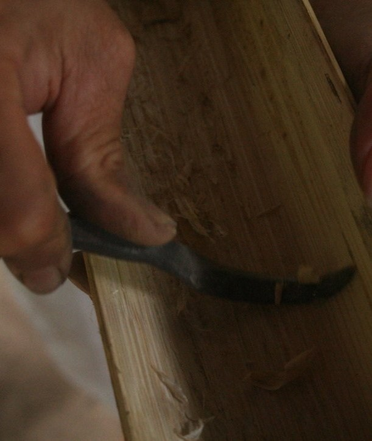
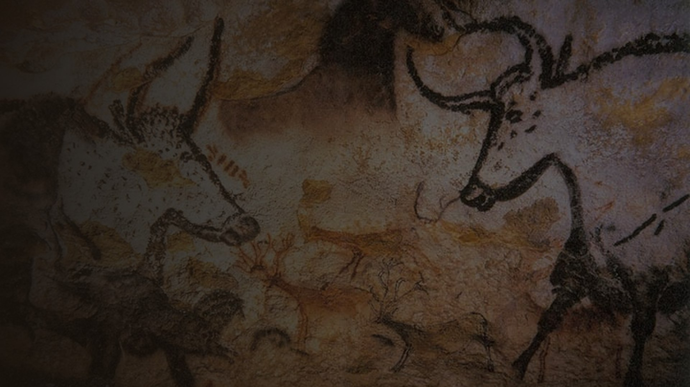
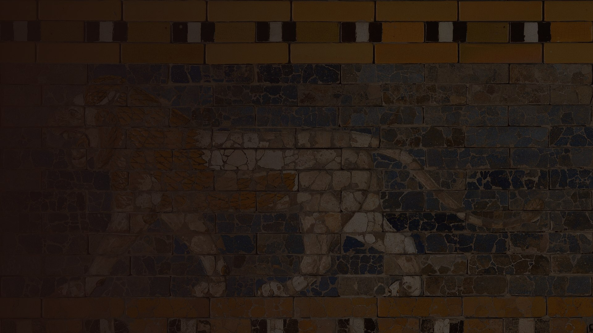
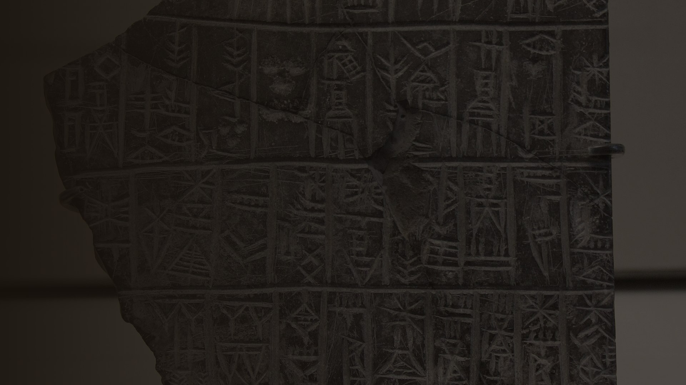
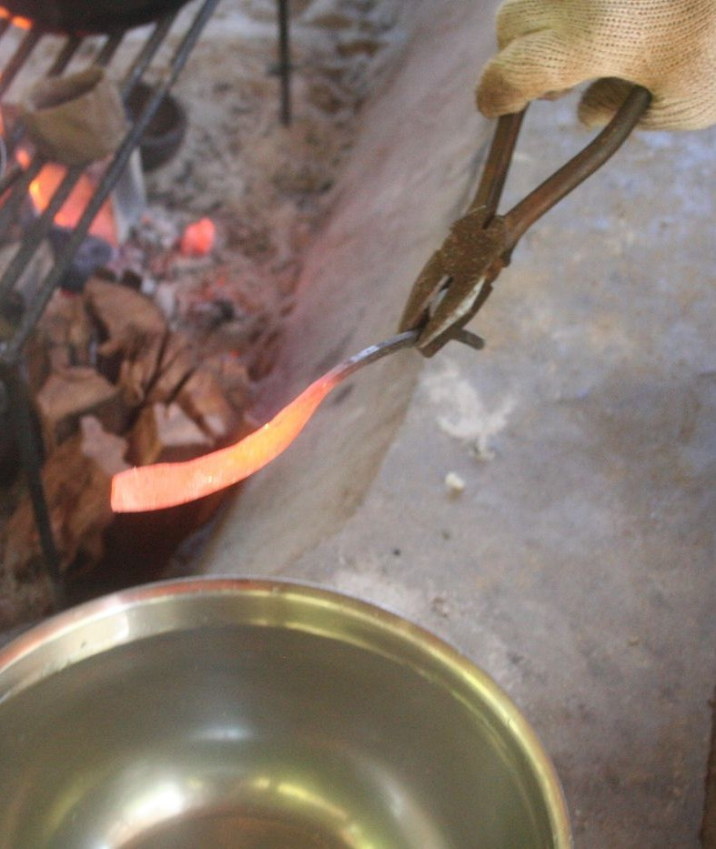
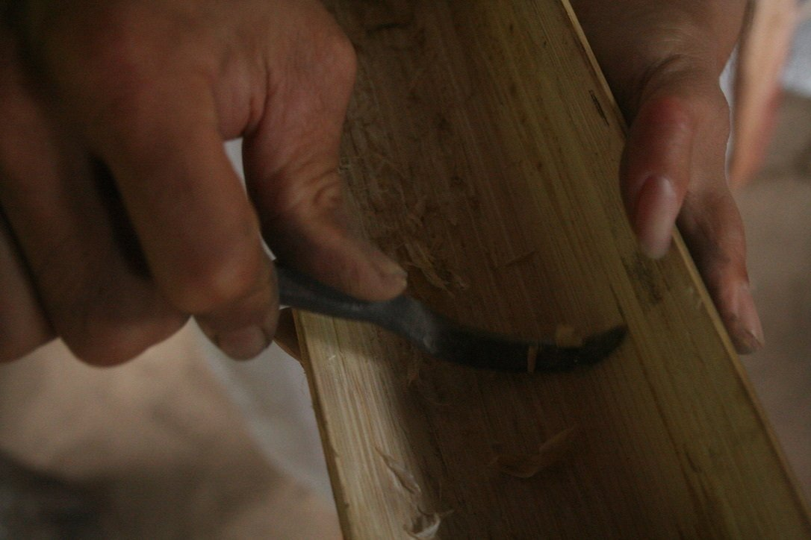
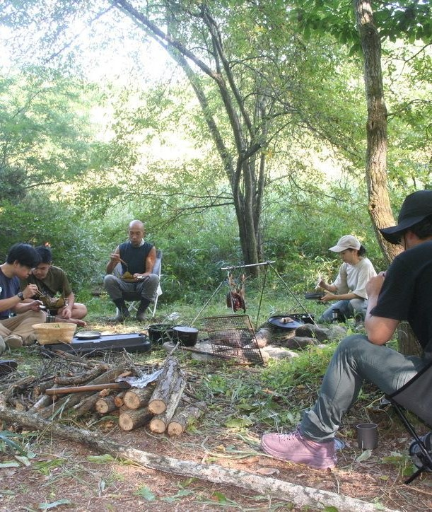

再野生化のための技術哲学──全体構成スライド
2026.9.20版 執筆ガイダンス（本の軸）
口述の新構成と、現行原稿（約21万字）を統合した「本の軸」。ここから先の原稿は、この構成をガイダンスに書く。
各章スライドは、その章が何をどの順で言うかの設計図。
技術的意識・道具のジレンマ・技術多様性・再野生化──どの章で立て、どの章で回収するか。
章スライドの末尾に現状を表記する。
惑星的危機の根源には、テクノロジーという「一つの技術」の支配がある。しかも、誰も能動的に操縦していない。
人類は言語的意識を獲得した。次に獲得すべきは、技術的意識である。
出口は、外からの規制でも、文明から降りることでもない。テクノロジーを内側から更新すること──技術の再野生化、未開の未来。
立場：反テクノロジーではない。「内側から更新する」派。
本書全体を貫く新概念。言語や意識には自覚へのアプローチがあるのに、技術にだけ無い。
序＋8章。基層から立ち上げ、秩序の歴史で折り返し、再野生化で締める。
ジャングルの違和感から。全体概要と三つの未来。
いま、現在、どうなっているのか。
危機に応答する学問としての役割。
定義→宇宙的起源→生命。最も広い技術。
道具と人間。道具性・ジレンマ・技術的意識。
技術的意識が強制されてきた5万年。
応答すべき・生命から・没入。
ハイデガー・野生のサイバネティクス・東洋。
総まとめ。未開の未来へ。

銛一本のジレンマ。消えなかった違和感。プリミティブなサイボーグ。
全体概要として、三つの未来と「未開の未来」の実現、テクノロジーを内側から更新する必要性、その前提としての惑星的危機まで、冒頭で一気に見せる。
原稿：◎ ほぼ完成。惑星的危機の章へつなぐ一段のみ追加。
少年期の違和感と、ジャングルの銛。テクノロジーを多少嗜んできた半生。
人間の条件の発見。人間が悪いのか？
技術の本質と、根源へ遡る意味。
このまま／降りる／方向を変える。内側から更新する。
全章の予告。そして惑星的危機へ橋を架ける。
いま、現在、どうなっているのか。
気候・生態系・社会・AIの加速。危機の現在地を、データの羅列ではなく「作らされている」という感覚から描く。誰も操縦していない巨大な力。
役割：読者と危機認識を共有し、「なぜいま技術を問うのか」への必然をつくる。
✕ 新規執筆（現行はスタブ）。ハラリ的診断の引用で終わらせず、「技術のあり方」への問いに絞り込む。

惑星的危機に応答する学問として、技術哲学を紹介する。若い学問、古い問い。
「人間と技術のあいだ」は、なぜ誰にも問われてこなかったのか──そこから始める。
理由1：二つの不可分性。理由2：実質的な技術決定論。
若い学問、古い問い。
道具ではない／生まれながらのサイボーグ／関係のなかで何かになる／ゲシュテル／技術多様性。
便利さの裏で、何が量られているのか。
降ろすべき中心は二つある。これはロマン主義ではない。
◎ 原稿あり。「危機に応答する学」という役割づけを冒頭に明示する再フレームのみ。
ここからが本題。最も広い「技術」の概念づけ。
人間以外の技術を含めた、技術一般の、いちばん広いレベルでの捉え直し。技術の基礎はどうなっているのか、本質部分はどうなっているのか。
テクネー／モノかワザか／生きるための知恵／科学と技術／技術・道具・テクノロジーの三区別。
素材と身体の普遍的な共鳴。発明とは発見。宇宙的条件。生命という底。
アフォーダンスとエナクティヴィズム。倫理以前からの、倫理の問い。
デザインされたアフォーダンス──「使う技術」から「使われる技術」へ。テクノロジーと基層の距離。
◎ 原稿あり（統合清書済み）。順序を「定義→宇宙→生命→身体」に固定。
道具を掘り下げる。そして「技術的意識」へ。

いかに人間は技術を、道具を必要とするのか。どのように道具を発明したのか。
◎ 原稿あり。
道具の性質を体系的に解説する。誰もが使っているのに、誰も気づいていない。気づいた方がいい。
外に出し、広げ、取り込み、見えなくなる。
道具は単体で存在しない。世界を編む。
道具は意味を運ぶ。物語のなかで道具になる。
道具は時間を貯め、身体に沈む。
道具が道具を生む。止まらない連鎖。
性質に気づいても、それだけでは済まない。
◎ 原稿あり（道具分析）。
道具性に気づいたとしても、ジレンマに陥る。技術の一番厄介な部分を、深く解説する。
外に出したものは、盗まれ、失われうる。
足し算か、引き出しか。得るたびに、沈んでいた何かが痩せる。
透明化。うまく機能しているときほど、問えない。
連鎖は誰にも止められない。それでも、生きる。
◎ 原稿あり（四つのジレンマは地盤である／内にあるのか、外にあるのか）。

人間の意識・言語・社会性は、はじめから技術とともにあった。
◎ 原稿あり。
技術への意識を獲得していく必要がある。だが、その気づきが決定的に足りていない。
洞窟に手を描いた頃から、技術への驚きはあった。主観的な感動どまりで、本質・本性への気づきに至らなかった。
言語は言語学が、意識は認知科学・心理学が自覚への道をつくった。技術的意識へのアプローチだけが、全く無い。
道具は現に意識と身体を変容させている（入來実験ほか）。だが、いまどんな技術を使っているか、誰も気づいていない。
それは道具性とジレンマを知ること、人間の本性を知ることにつながる。AI時代に真っ先になすべきこと。これなしのAI倫理は上滑りする。
✕ 新規執筆（口述素材あり）。この章の結論部として書き下ろす。
壮大な議論なので、ここで一度、圧縮して整理する小括を置く。
✕ 新規（1〜2ページの小括）。

技術的意識は、いかに一方向に強制されてきたか。
「技術は道具である」という考えを克服できなかったのは、5万年かけて、その意識が強化されてきたからだ。その歴史を、神話からAIまで一本の線で整理する。
そもそも私たちの技術を発揮する行為は、神話的なものに紐づけられている。
◎ 原稿あり。
世界神話学説。人類の移動経路に沿って、神話は分岐した。
世界ははじめからある。循環する時間。精霊と地続きの共存。約7万年前の第一波。
創造から終末への一本の物語。階層と秩序。ギリシャ神話も聖書も古事記もこの型。
日本。縄文の古層に弥生が重なり、神道・仏教・儒教が併存する混交。
◎ 原稿あり ＋ △「未分化」の強調を追記。
「技術は、意識に上る前に発揮されるのが良い」「技術は以心伝心で、言語を伴わずに伝承されるものだ」──この考え方を、本書は克服する。
それは、これまでは良かった。実際、うまくいってきた。だが、時代は変わってしまった。
言語的意識──世界を言語的に理解すること──を獲得した人類が、次に得るべきものが、技術的意識──世界を技術的に理解すること──である。
✕ 新規執筆（口述素材あり）。神話の章と歴史の章をつなぐ蝶番。

ローラシア型の系譜の西側で、メソポタミア文明が誕生する。私たちは、5000年前の雛形のまま生きている。
◎ 原稿あり（古代の技術の秩序の誕生）。
古代ギリシャから中世ヨーロッパへ。テクノロジー前夜。
△ 増補。現行は薄い。「近代の秩序」の手前に1章分立てる。
産業革命。技術が科学と資本に束ねられ、テクノロジーになる。
△ ゲシュテル論を応答部からこの章へ移動。接続を書き直す。
計算機とAI。「計算可能な世界」という当たり前の完成形。5000年の秩序の最新層。
◎ 原稿あり（計算機とAI／固定化が生むもの）。
✕ 新規執筆（口述素材あり）。秩序の部の締め。

このように形作られたテクノロジーに対して、いかなる応答が可能なのか。
＝技術的意識を、いかに獲得できるのか。
絶望から始める。火を盗んだ者たちの系譜。三つの命題──不可分性の受容と、決定論の乗り越え。
プラトンの呪い。生情報の序列──タモス王、AIに物申す。技術を使う生命に、気づく。
メイカーズ。観想の玉座を降りる。作られたものから、作るものへ。
気づいているサイボーグ。絶望しながら、超えていく。
◎ 原稿あり。ゲシュテル論を秩序へ移した分の接続を調整。

飼いならされた世界の見方を超えるヒントは、どこにあるか。
ゲシュテルの診断は第5章で確認済み。ここでは、その先のヒントを拾う。
ハイデガーの理想：自然に内在する力を、外へ導く。
一つの存在の歴史ではなく、複数の技術のありようへ。
予測が現実を上回る時代に、サイボーグとして野生に還る。いま求められる「知恵」。
◎ 原稿あり。
東洋思想において、技術は自然との関係をどう築いてきたか。
◎ 原稿あり（無為の技術の扉／テクノロジーは夢である）。
総まとめ。技術の基層から、原初のサイボーグから、野生のサイバネティクスまで──一気に束ねる。

◎ 原稿あり。
◎ 原稿あり。
テクノロジーを、内側から更新する。
そして、応答してほしい。
◎ 原稿あり。
背骨から書く。新規✕→増補△→接続調整の順。
本書の背骨。口述素材あり。ここが決まると全体の語りが定まる。
秩序の部の蝶番と締め。口述素材あり。
ロゴス・キリスト教・観想の玉座。ゲシュテル論の移設もここで。
新規。「はじめに」からの橋と合わせて書く。
技術的意識の語彙で全体を貫いているか検証。
この構成をガイダンスに、原稿を書き進める。
2026.9.20 構成ガイド v1